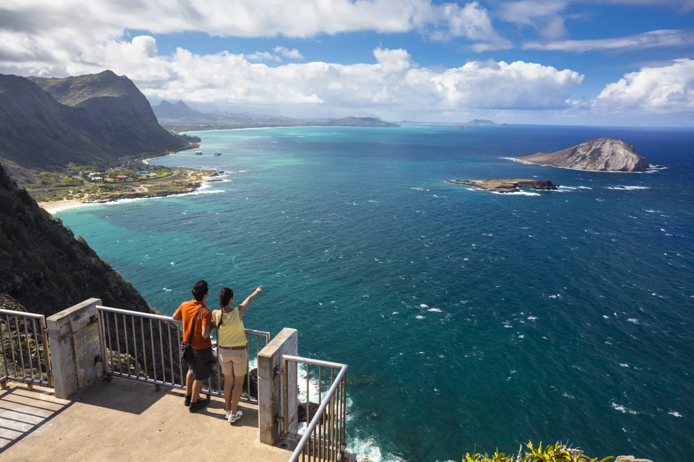

Discover the Best of Taniti
Entertainment
Most people visit Taniti to enjoy the beaches, explore the rainforest, and visit the volcano. However, there are other things to do, including visiting a local history museum, going on chartered fishing tours, snorkeling, zip-lining in the rainforest, visiting several pubs, including a microbrewery, dancing at a new dance club, seeing a movie, taking helicopter rides, playing at an arcade, visiting art galleries, and bowling. Also, a nine-hole golf course should be operational by next year. Many of these activities are located in Merriton Landing, which is a rapidly developing area on the north side of Yellow Leaf Bay.
For families, the island offers plenty of entertainment options, including an amusement park with rides and games, a water park perfect for cooling off in the tropical heat, and cultural shows that highlight Tanitian music and dance.

Sightseeing
Most tourists spend most of their time in Taniti City, which boasts native architecture and nearby white, sandy beaches that encircle Yellow Leaf Bay. Other popular activities include boat or bus tours of the island, hikes in the rainforest, or visits to Taniti’s active volcano.
Nature lovers will appreciate the island’s numerous scenic viewpoints, offering breathtaking vistas of the ocean and rainforest. Guided tours to the volcano provide a safe and informative way to explore one of Taniti’s most fascinating natural wonders. Don't forget to visit the famous Taniti Lighthouse, which dates back over a century and provides spectacular photo opportunities.
Top Attractions in Taniti
- Merriton Landing: A hub of activity with pubs, restaurants, and family-friendly entertainment.
- Yellow Leaf Bay: Perfect for relaxing on the beach or enjoying water sports.
- Rainforest Zip-lining: Experience the thrill of flying over lush greenery.
- Taniti Volcano Tours: Explore the island’s active volcano with guided hikes.
- Taniti Lighthouse: A historic landmark with panoramic views.